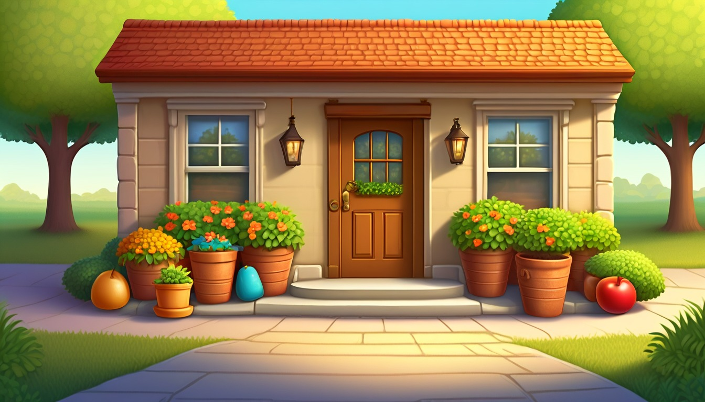

Sixteen paper sleeve cards help writers try short sentences, stretched sentences, question sentences, starter swaps, sentence combines, rhythm checks, and final varied lines.
Audience: Families, homeschool groups, tutors, and adult-led writing tables for writers ages 6-11.
Format: 16 printable sentence-variety cards plus adult guide tools, sentence-variety routines, take-home sentence slips, and optional prompts
Family-safe printable writing pages for adult-led, offline story practice.
$69
Included
16 printable paper sleeve sentence variety cards
Adult setup guide
Fictional sentence-variety safety notes
Paper sleeve coaching moves
Family handoff notes
Pack reset notes
Six adult-led sentence variety routines
Ten take-home sentence slips
Eight optional prompts
Provider-ready PDF and ZIP artifact
Adult guide
Story sentence-variety coaching
Paper Sleeve Story Sentence Variety Adult Guide
Print the paper sleeve sentence variety cards, blank strips, and guide pages before the adult-led paper session.
Begin with one plain fictional sentence, then coach short sentences, stretched sentences, question sentences, starter swaps, sentence combines, rhythm checks, and final lines.
Keep every example made-up, broad, printable, offline, paper-only, and guided by an adult.
Use one sleeve strip for each sentence shape so the writer can compare rhythm without crowding the page.
Change sentence shape without adding narrow outside facts; use invented objects, broad story places, and made-up character names.
End each activity by copying one final varied fictional sentence that sounds clear, smooth, and intentional on paper.
Use one paper sleeve story sentence-variety card at a time. Keep every choice broad, invented, paper-only, and screen-free.
World menu
Sixteen sentence-variety-card worlds
Pick a world image, then revise one fictional sentence with a pretend paper sleeve story sentence-variety card.
Ages 6-8
Moon Muffin Market
Ages 6-8
Puddle Planet Post Office
Ages 7-9
Buttonwood Library Train
Ages 7-9
Button Bakery Map Mix-Up
Ages 7-8
Teacup Town Weather Window
Ages 7-9
Pocket Park Notice Board
Ages 7-9
Spoon Ferry Lunchbox Harbor

Ages 7-9
Acorn Avenue Errand Office
Ages 8-10
Seed Library Map Room
Ages 8-10
Rain Gauge Railway
Ages 8-10
Moss Message Observatory
Ages 8-10
Tidepool Timekeepers Lab
Ages 10-11
Revision River Ferry
Ages 10-11
Clue Label Tower Museum
Ages 10-11
Compass Craft Academy
Ages 10-11
Binding Day Boardwalk
Story sentence-variety routines
Choose the paper sleeve sentence-variety rhythm
Short Sentence Fold
Turning a crowded fictional idea into one clear short sentence.
The adult writes one plain fictional idea on the sleeve strip: ____________________.
The writer underlines the one idea that matters most in the line: ____________________.
The adult asks which extra words can come out while the meaning stays clear: ____________________.
The writer writes the short sentence on a fresh strip: ____________________.
Stretched Sentence Add-On
Adding one useful detail to a short fictional sentence.
The adult places the short sentence beside a blank stretch strip: ____________________.
The writer chooses one useful detail about an invented object, action, or broad story place: ____________________.
The adult asks where the detail fits without making the sentence crowded: ____________________.
The writer writes the stretched sentence with one added detail: ____________________.
Question Sentence Turn
Trying a question sentence to create curiosity on paper.
The adult writes a statement from the fictional card: ____________________.
The writer chooses the wondering word that fits the sentence, such as what, why, how, or where: ____________________.
The adult asks how the statement must change so it becomes a question: ____________________.
The writer writes the question sentence with the same made-up idea: ____________________.
Starter Swap Slide
Moving the sentence starter so two lines do not begin the same way.
The adult writes two fictional sentences that begin in a similar way: ____________________.
The writer circles the starter that can move to a new position: ____________________.
The adult asks whether an action, object, or broad story place should start the revised line: ____________________.
The writer writes the starter-swap sentence on the sleeve strip: ____________________.
Sentence Combine Fold
Joining two tiny fictional sentences into one smoother sentence.
The adult writes two short fictional sentences on separate strips: ____________________.
The writer marks the shared idea that lets the two strips fold together: ____________________.
The adult asks which joining word or comma spot makes the combined line smooth: ____________________.
The writer writes the combined sentence as one clear line: ____________________.
Rhythm Check Final Line
Choosing the sentence shape that sounds best before finishing.
The adult places the short, stretched, question, starter-swap, and combined options in a row: ____________________.
The writer marks the sentence that has the best paper rhythm for the pretend moment: ____________________.
The adult asks whether one word should move, change, or come out before copying the final line: ____________________.
The writer writes the final varied fictional sentence: ____________________.
Take-home sentence slips
Try one sentence shape later
single sleeve pass | short sentence
Short Sentence Slip
Write one made-up idea as a clear short sentence: ____________________.
Ask which words can come out while the idea stays clear: ____________________.
quiet pencil pass | stretched sentence
Stretched Sentence Slip
Add one useful invented detail to stretch a short sentence: ____________________.
Ask which detail helps the reader picture the pretend moment: ____________________.
single paper pass | question sentence
Question Sentence Slip
Turn one fictional statement into a question sentence: ____________________.
Ask what the question makes the reader wonder: ____________________.
fresh strip pass | starter swap
Starter Swap Slip
Move the starter of one fictional sentence to create a new rhythm: ____________________.
Ask which starter sounds strongest on paper: ____________________.
folded strip pass | sentence combine
Sentence Combine Slip
Combine two tiny fictional sentences into one smooth line: ____________________.
Ask which shared idea helped the sentences fold together: ____________________.
calm revision pass | split crowded sentence
Split Sentence Slip
Split one crowded fictional sentence into two clear sentences: ____________________.
Ask where the sentence should break so each idea has space: ____________________.
new sleeve pass | action starter
Action Starter Slip
Start one fictional sentence with a clear action word: ____________________.
Ask how the action starter changes the rhythm of the line: ____________________.
paper strip pass | object starter
Object Starter Slip
Start one fictional sentence with an invented object: ____________________.
Ask whether the object starter makes the sentence more specific: ____________________.
two-strip pass | short and stretched pair
Rhythm Pair Slip
Write one short sentence and one stretched sentence for the same pretend idea: ____________________.
Ask which sentence should come first for smoother rhythm: ____________________.
final paper pass | final varied sentence
Final Line Slip
Copy the varied fictional sentence that sounds clearest on paper: ____________________.
Ask what changed from the plain sentence to the final line: ____________________.
Optional share prompts
Optional adult-led offline prompt: the plain fictional sentence for this sleeve strip is ____________________.
Optional adult-led offline prompt: the short sentence version is ____________________.
Optional adult-led offline prompt: the stretched sentence with one useful detail is ____________________.
Optional adult-led offline prompt: the question sentence I will try is ____________________.
Optional adult-led offline prompt: the starter I moved to the front is ____________________.
Optional adult-led offline prompt: the two tiny sentences I combined are ____________________.
Optional adult-led offline prompt: the rhythm change that made the line smoother is ____________________.
Optional adult-led offline prompt: the final varied fictional sentence is ____________________.
Story Sentence Variety Card 1 | Ages 6-8 | turn one tiny market idea into short, stretched, question, and combined sentence choices
Moon Muffin Paper Sleeve Counter Sentences
Moon Muffin Market
Adult setup: Adult: Place this paper card beside blank paper and choose one invented moon muffin counter idea to reshape: ____________________.
Writer: Try the same tiny market idea as a short line, a longer line, a question, and a final smooth line: ____________________.
Short sentence
Short sentence: The tray glowed: ____________________.
Stretched sentence
Stretched sentence: Add where, when, or how the moon muffin tray glowed at the counter: ____________________.
Question sentence
Question sentence: Ask what the helper noticed about the glowing tray: ____________________.
Starter swap
Opening swap: Begin with At the counter, With one soft glow, or Under the paper awning: ____________________.
Sentence combine
Sentence combine: Join The tray glowed and The helper smiled with and, so, or because: ____________________.
Rhythm check
Rhythm check: Read the short line and the stretched line on paper, then mark the smoother one: ____________________.
Final line
Final line: Choose the best moon muffin sentence shape and write it clearly: ____________________.
Quiet option: Point to one favorite sentence shape, then write only the final line: ____________________. Later line: Try the same sentence shapes with a pretend crumb card or silver wrapper: ____________________.
Story Sentence Variety Card 2 | Ages 6-8 | practice short, stretched, question, and joined sentences for a pretend mail clue
Puddle Planet Paper Sleeve Ripple Mail
Puddle Planet Post Office
Adult setup: Adult: Set this paper card beside blank paper and offer one invented puddle note or shell slot idea: ____________________.
Writer: Make the puddle mail idea sound different by changing sentence length, beginning, and question form: ____________________.
Short sentence
Short sentence: The note floated: ____________________.
Stretched sentence
Stretched sentence: Add where the note floated and what it brushed beside the shell slot: ____________________.
Question sentence
Question sentence: Ask who should read the ripple note next: ____________________.
Starter swap
Opening swap: Begin with Beside the shell slot, Across the ripple tray, or After one bob: ____________________.
Sentence combine
Sentence combine: Join The note floated and The stamp wobbled with and, while, or because: ____________________.
Rhythm check
Rhythm check: Compare the short sentence with the combined sentence and choose the clearer paper line: ____________________.
Final line
Final line: Write the puddle mail sentence in the shape that fits best: ____________________.
Quiet option: Circle short, stretched, question, or combined before writing the final line: ____________________. Later line: Try another pretend puddle mail sentence with a shell slot or ripple stamp: ____________________.
Story Sentence Variety Card 3 | Ages 7-9 | vary a library train line by changing length, opening phrase, question shape, and combined detail
Buttonwood Paper Sleeve Ticket Turn
Buttonwood Library Train
Adult setup: Adult: Place this paper card beside blank paper and choose one invented ticket, shelf, or station-card moment: ____________________.
Writer: Change the library train idea into a short line, a stretched line, a question, and a polished final line: ____________________.
Short sentence
Short sentence: The ticket slipped: ____________________.
Stretched sentence
Stretched sentence: Add how the ticket slipped along the rolling shelf and where it stopped: ____________________.
Question sentence
Question sentence: Ask why the ticket slipped toward the shelf tag: ____________________.
Starter swap
Opening swap: Begin with Along the rolling shelf, Before the bell note, or With a soft slide: ____________________.
Sentence combine
Sentence combine: Join The ticket slipped and The traveler paused with so, while, or because: ____________________.
Rhythm check
Rhythm check: Read the question and the combined sentence on paper, then pick the line with the cleanest flow: ____________________.
Final line
Final line: Write one library train sentence with the strongest shape and smoothest flow: ____________________.
Quiet option: Underline one opening phrase first, then write the final line: ____________________. Later line: Try the same sentence shapes with a bookmark strip or station card: ____________________.
Story Sentence Variety Card 4 | Ages 7-9 | reshape a map-table mix-up line with short, stretched, question, opening, and combined versions
Button Bakery Paper Sleeve Map Table
Button Bakery Map Mix-Up
Adult setup: Adult: Set this paper card beside blank paper and keep every map-table mark invented before the writer revises: ____________________.
Writer: Try the bakery map-table idea in several sentence shapes, then choose the clearest final line: ____________________.
Short sentence
Short sentence: The crumb map tilted: ____________________.
Stretched sentence
Stretched sentence: Add where the crumb map tilted and what button marker shifted beside it: ____________________.
Question sentence
Question sentence: Ask which button marker made the crumb map tilt: ____________________.
Starter swap
Opening swap: Begin with On the map table, Beside the button marker, or After one tiny tilt: ____________________.
Sentence combine
Sentence combine: Join The crumb map tilted and The ribbon path curved with and, so, or while: ____________________.
Rhythm check
Rhythm check: Try the opening phrase first and last, then choose the version that reads more smoothly: ____________________.
Final line
Final line: Write one button bakery sentence with the best length, beginning, and rhythm: ____________________.
Quiet option: Choose one beginning and one connector, then write the final line: ____________________. Later line: Make another pretend map-table sentence using a button marker or ribbon path: ____________________.
Story Sentence Variety Card 5 | Ages 7-8 | create sentence variety with a tiny weather-window clue and a smooth final line
Teacup Town Paper Sleeve Weather Pane
Teacup Town Weather Window
Adult setup: Adult: Place this paper card beside blank paper and name one invented weather card, cup sill, or cloud tag clue: ____________________.
Writer: Make the weather-window clue work as a short sentence, a stretched sentence, a question, and a final line: ____________________.
Short sentence
Short sentence: The cloud tag twirled: ____________________.
Stretched sentence
Stretched sentence: Add where the cloud tag twirled beside the cup sill and how it moved: ____________________.
Question sentence
Question sentence: Ask what the tiny watcher noticed about the cloud tag: ____________________.
Starter swap
Opening swap: Begin with Beside the cup sill, Under the pale pane, or With one quick twirl: ____________________.
Sentence combine
Sentence combine: Join The cloud tag twirled and The forecast strip lifted with as, and, or so: ____________________.
Rhythm check
Rhythm check: Read the stretched sentence and the question, then pick the one that sounds best on paper: ____________________.
Final line
Final line: Write one Teacup Town sentence with the clearest shape and softest flow: ____________________.
Quiet option: Mark the sentence shape you like, then write only the final line: ____________________. Later line: Try the same shapes with a weather card or forecast strip: ____________________.
Story Sentence Variety Card 6 | Ages 7-9 | balance a notice-board line with short, stretched, question, swapped opening, and combined sentence forms
Pocket Park Paper Sleeve Notice Board
Pocket Park Notice Board
Adult setup: Adult: Set this paper card beside blank paper and choose one invented leaf notice or board edge idea: ____________________.
Writer: Try the notice-board idea in four sentence shapes, then pick the line that reads best: ____________________.
Short sentence
Short sentence: The leaf notice fluttered: ____________________.
Stretched sentence
Stretched sentence: Add where the leaf notice fluttered and what the keeper adjusted beside it: ____________________.
Question sentence
Question sentence: Ask why the leaf notice fluttered at the board edge: ____________________.
Starter swap
Opening swap: Begin with At the board edge, Beneath the bench label, or After one paper flutter: ____________________.
Sentence combine
Sentence combine: Join The leaf notice fluttered and The keeper adjusted the corner with and, so, or while: ____________________.
Rhythm check
Rhythm check: Compare the short sentence with the combined sentence and choose the steadier paper line: ____________________.
Final line
Final line: Write one pocket park notice sentence with the best sentence shape: ____________________.
Quiet option: Box one connector word before writing the final line: ____________________. Later line: Try another pretend notice-board sentence with a leaf note or bench label: ____________________.
Story Sentence Variety Card 7 | Ages 7-9 | alternate short and long lines
Spoon Ferry Lunchbox Harbor Sentence Variety Card
Spoon Ferry Lunchbox Harbor
Adult setup: Adult: print this card and name a pretend spoon ferry, lid dock, or napkin pier before writing begins: ____________________.
Writer: try one tiny ferry line, one stretched ferry line, and one question, then choose the smoothest final line: ____________________.
Short sentence
Short sentence: write a clear spoon ferry line with one action: ____________________.
Stretched sentence
Stretched sentence: add one useful harbor detail to the ferry line without crowding it: ____________________.
Question sentence
Question sentence: ask what the spoon ferry carries across the pretend harbor: ____________________.
Starter swap
Opening swap: begin with Across the lid dock, Near the napkin pier, or With a soft clink: ____________________.
Sentence combine
Sentence combine: join The ferry glides. The label waits. into one smooth fictional sentence: ____________________.
Rhythm check
Rhythm check: mark short, stretched, or question as the line that reads best on paper: ____________________.
Final line
Final line: copy the ferry sentence with the clearest paper rhythm: ____________________.
Quiet option: circle one sentence shape and fill only the final ferry line: ____________________. Carry-away line: revise one pretend ferry sentence by changing its shape, not its meaning: ____________________.
Story Sentence Variety Card 8 | Ages 7-9 | add an invented where phrase
Acorn Avenue Errand Office Sentence Variety Card
Acorn Avenue Errand Office
Adult setup: Adult: print this card and choose a pretend acorn slip, twig tray, or seed stamp as the sentence object: ____________________.
Writer: move the where phrase, test a short line, and keep the errand sentence clear: ____________________.
Short sentence
Short sentence: name one acorn office action in five words or fewer: ____________________.
Stretched sentence
Stretched sentence: add where the acorn slip waits, using only invented office details: ____________________.
Question sentence
Question sentence: ask where the leaf clerk should set the acorn slip: ____________________.
Starter swap
Opening swap: begin with Beside the twig tray, Under the seed stamp, or At the paper counter: ____________________.
Sentence combine
Sentence combine: join The clerk sorts slips. The tray fills up. into one clean fictional sentence: ____________________.
Rhythm check
Rhythm check: choose whether the where phrase reads better at the front or end: ____________________.
Final line
Final line: copy the acorn office sentence with the clearest where phrase: ____________________.
Quiet option: choose one where phrase and write only the final office line: ____________________. Carry-away line: reshape one pretend errand sentence with a new where phrase: ____________________.
Story Sentence Variety Card 9 | Ages 8-10 | add an invented when phrase
Seed Library Map Table Sentence Variety Card
Seed Library Map Room
Adult setup: Adult: print this card and choose a pretend seed card, folded map, or shelf label for the map table: ____________________.
Writer: try a short seed library line, stretch it with a when phrase, and keep every detail made up: ____________________.
Short sentence
Short sentence: write one clear map table action with a seed card: ____________________.
Stretched sentence
Stretched sentence: add a when phrase such as After the bell note or Before the cart pause: ____________________.
Question sentence
Question sentence: ask when the seed keeper should tuck the card beside the map: ____________________.
Starter swap
Opening swap: begin with Before the cart pause, After the label flip, or While the map lies flat: ____________________.
Sentence combine
Sentence combine: join The map lies flat. The seed card waits. into one smooth seed library sentence: ____________________.
Rhythm check
Rhythm check: decide whether the when phrase makes the line clear or too crowded: ____________________.
Final line
Final line: copy the seed library sentence with the best paper rhythm: ____________________.
Quiet option: pick one when phrase and write only the final map table line: ____________________. Carry-away line: revise one pretend seed library sentence by moving its when phrase: ____________________.
Story Sentence Variety Card 10 | Ages 8-10 | use an action opening
Rain Gauge Railway Sentence Variety Card
Rain Gauge Railway
Adult setup: Adult: print this card and choose a pretend gauge bead, rail label, or platform flag: ____________________.
Writer: begin with an action, then test the same railway idea as a short line, stretched line, and question: ____________________.
Short sentence
Short sentence: write one clear rain gauge railway action: ____________________.
Stretched sentence
Stretched sentence: add one useful rail or gauge detail to the action line: ____________________.
Question sentence
Question sentence: ask what the rain conductor checks before the gauge bead rolls: ____________________.
Starter swap
Opening swap: begin with Measuring the gauge bead, Rolling past the platform, or Lifting the rail label: ____________________.
Sentence combine
Sentence combine: join The gauge bead rolls. The platform flag lifts. into one smooth railway sentence: ____________________.
Rhythm check
Rhythm check: compare the action opening with the plain opening and choose the clearer line: ____________________.
Final line
Final line: copy the rain railway sentence with the clearest action opening: ____________________.
Quiet option: underline the action opening and write only the final railway line: ____________________. Carry-away line: reshape one pretend railway sentence by moving the action to the opening: ____________________.
Story Sentence Variety Card 11 | Ages 8-10 | use a quiet question before an answer
Moss Message Observatory Sentence Variety Card
Moss Message Observatory
Adult setup: Adult: print this card and choose a pretend moss note, pebble lens, or sky chart for the paper prompt: ____________________.
Writer: write a quiet question, answer it with a stretched line, then copy the final sentence pair: ____________________.
Short sentence
Short sentence: write one clear moss observatory answer in a short line: ____________________.
Stretched sentence
Stretched sentence: add one useful detail about the moss note, pebble lens, or sky chart: ____________________.
Question sentence
Question sentence: ask a quiet question about what the moss note points toward: ____________________.
Starter swap
Opening swap: begin the answer with Beside the pebble lens, Under the sky chart, or With careful marks: ____________________.
Sentence combine
Sentence combine: join The moss note curls. The watcher reads it. into one smooth observatory sentence: ____________________.
Rhythm check
Rhythm check: choose whether the question should stand alone or pair with the answer: ____________________.
Final line
Final line: copy the question and answer that read best together on paper: ____________________.
Quiet option: write only the question first, then one answer line: ____________________. Carry-away line: revise one pretend observatory answer by placing a question before it: ____________________.
Story Sentence Variety Card 12 | Ages 8-10 | write a sentence pair with contrast
Tidepool Timekeepers Lab Contrast Pair
Tidepool Timekeepers Lab
Adult setup: Adult: set this card beside blank paper and one pretend sleeve strip, then offer a broad tidepool lab idea: ____________________.
Writer: write one short tidepool sentence, stretch the next line with a contrast, and keep both ideas invented: ____________________.
Short sentence
Short sentence: write one clear line about a shell dial, pool marker, or tide bead: ____________________.
Stretched sentence
Stretched sentence: add one useful contrast after but or while without crowding the line: ____________________.
Question sentence
Question sentence: ask what changed between the first line and the second line: ____________________.
Starter swap
Starter swap: begin the contrast line with Instead, Meanwhile, or By the shell dial: ____________________.
Sentence combine
Sentence combine: join The pool was calm and The shell dial clicked into one contrast sentence: ____________________.
Rhythm check
Rhythm check: mark whether the short line followed by the contrast line sounds clear: ____________________.
Final line
Final line: copy the tidepool sentence pair that shows contrast without extra words: ____________________.
Quiet option: write only the short line and one contrast word: ____________________. Carry-on line: make a new tidepool sentence pair where the second line changes the first idea: ____________________.
Story Sentence Variety Card 13 | Ages 10-11 | trim a sentence back to one idea
Revision River Ferry One-Idea Trim
Revision River Ferry
Adult setup: Adult: place this card beside blank paper and one pretend sleeve strip, then offer a broad draft-ferry idea: ____________________.
Writer: write a crowded ferry sentence, choose the one idea that matters most, and trim the rest: ____________________.
Short sentence
Short sentence: write the one idea the ferry sign needs to keep: ____________________.
Stretched sentence
Stretched sentence: write the crowded version with two invented details so you can trim it: ____________________.
Question sentence
Question sentence: ask which detail is doing the clearest job: ____________________.
Starter swap
Starter swap: begin with the ferry marker, the draft oar, or the folded sign: ____________________.
Sentence combine
Sentence combine: join two tiny ferry lines, then keep only the idea that carries the sentence: ____________________.
Rhythm check
Rhythm check: read the long version and the trimmed version, then mark the cleaner rhythm: ____________________.
Final line
Final line: copy the trimmed ferry sentence with one clear idea: ____________________.
Quiet option: cross out one extra detail and copy the sentence that remains: ____________________. Carry-on line: trim another ferry sentence so it keeps one idea: ____________________.
Story Sentence Variety Card 14 | Ages 10-11 | choose the best sentence order
Clue Label Tower Museum Order Choice
Clue Label Tower Museum
Adult setup: Adult: set this card beside blank paper and one pretend sleeve strip, then choose a broad museum clue: ____________________.
Writer: try the same clue in two sentence orders, then choose the order that helps the line make sense: ____________________.
Short sentence
Short sentence: write one clear label clue about a display drawer or pointer card: ____________________.
Stretched sentence
Stretched sentence: add one useful clue after the main action: ____________________.
Question sentence
Question sentence: ask which clue the reader should notice first: ____________________.
Starter swap
Starter swap: begin with First, Beside the case, or Under the pointer card: ____________________.
Sentence combine
Sentence combine: join The label tipped and The clue drawer opened in the order that makes sense: ____________________.
Rhythm check
Rhythm check: compare the two sentence orders and mark the one that reads cleanly: ____________________.
Final line
Final line: copy the museum clue sentence in its best order: ____________________.
Quiet option: write two starts, circle the clearer opening, and copy the line: ____________________. Carry-on line: reorder one museum sentence so the clue appears before the result: ____________________.
Story Sentence Variety Card 15 | Ages 10-11 | compare two sentence rhythms on paper
Compass Craft Academy Rhythm Pair
Compass Craft Academy
Adult setup: Adult: set this card beside blank paper and two pretend sleeve strips, then keep the craft scene invented: ____________________.
Writer: write two versions of one compass-craft idea, one short and one stretched, then choose the smoother rhythm: ____________________.
Short sentence
Short sentence: write one crisp line about a paper needle or bead marker: ____________________.
Stretched sentence
Stretched sentence: add a useful craft detail after the action: ____________________.
Question sentence
Question sentence: ask whether the short or stretched line fits the craft moment: ____________________.
Starter swap
Starter swap: begin one version with Carefully, At the fold guide, or With the paper needle: ____________________.
Sentence combine
Sentence combine: join The compass card tilted and The bead marker slid into one smooth line: ____________________.
Rhythm check
Rhythm check: compare the two versions on paper and mark the sentence rhythm that feels steadier: ____________________.
Final line
Final line: copy the compass-craft sentence with the rhythm you would keep: ____________________.
Quiet option: label one version short and one version stretched, then copy the smoother line: ____________________. Carry-on line: make two compass-craft versions and keep the one with stronger rhythm: ____________________.
Story Sentence Variety Card 16 | Ages 10-11 | copy the strongest varied sentence
Binding Day Boardwalk Strongest Line
Binding Day Boardwalk
Adult setup: Adult: place this card beside blank paper and a pretend sleeve strip, then choose a broad booklet-closing idea: ____________________.
Writer: try a short line, a stretched line, a question, and a starter swap before copying the strongest varied sentence: ____________________.
Short sentence
Short sentence: write one clear boardwalk line about a booklet clasp, page rail, or thread loop: ____________________.
Stretched sentence
Stretched sentence: add one useful boardwalk detail without adding a second idea: ____________________.
Question sentence
Question sentence: ask what the page helper should choose next: ____________________.
Starter swap
Starter swap: begin with Beside the booklet stand, After the page fold, or With a thread loop: ____________________.
Sentence combine
Sentence combine: join The booklet opened and The clasp waited into one smooth sentence: ____________________.
Rhythm check
Rhythm check: compare all versions and mark the line that sounds strongest on paper: ____________________.
Final line
Final line: copy the strongest varied fictional boardwalk sentence: ____________________.
Quiet option: choose one shape and copy only the final boardwalk line: ____________________. Carry-on line: try one new sentence shape for a boardwalk idea and copy the strongest line: ____________________.